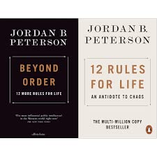

Library › Psychology & People
12 Rules for Life — Summary & Key Lessons

An antidote to chaos — stand up straight, clean your room, tell the truth, and pursue what is meaningful, not what is expedient.
📖 OPEN THE FULL INTERACTIVE BREAKDOWN →🌐 Read it in Hindi, Hinglish, Gujarati, Tamil & 22 more languages — free, with audio.
💡 The Big Idea
Peterson — clinical psychologist and professor — frames existence as the eternal navigation between chaos (the unknown, potential, catastrophe) and order (structure, tradition, tyranny when excessive), with meaning found on the border. His twelve rules are practical philosophy welded from psychology, neuroscience, mythology, and clinical practice: posture changes neurochemistry (Rule 1's lobsters), you deserve your own care (Rule 2), friendships should lift (Rule 3), compare yourself to yesterday's you (Rule 4), set your house in order before criticizing the world (Rule 6), pursue meaning over expedience (Rule 7), tell the truth — or at least don't lie (Rule 8), listen as if you could learn (Rule 9), and notice the cat when you meet one (Rule 12's grace amid suffering). Beneath all twelve: voluntary responsibility, not imposed happiness, is the load-bearing wall of a life.
🧠 The 5 Key Lessons
Lesson 1: Stand Up Straight: The Lobster's Lesson
Rule 1: Stand Up Straight With Your Shoulders Back
Peterson opens 350 million years down the evolutionary tree: lobsters run dominance hierarchies on serotonin — winners posture large and flood with confidence-chemistry; losers scrunch and depress, and the same circuitry, staggeringly conserved, runs in you. The feedback loop is the point: posture isn't just a display of status — it's an INPUT to it: standing straight (physically and metaphorically — accepting life's terrible responsibility voluntarily) shifts neurochemistry, invites different treatment from others, and initiates the virtuous spiral, while defeated posture broadcasts and thereby manufactures defeat. Hierarchies aren't a capitalist invention to be argued away; they're older than trees — so the practical question isn't whether to play, but from what stance. To stand up straight with your shoulders back is 'to accept the burden of Being' voluntarily — the posture of someone who has decided to be someone.
📖 Example: The lobster's chemistry is the famous exhibit: a defeated lobster given serotonin re-postures and re-fights — the losing spiral is chemically reversible, in crustaceans and (via different routes) in clinical practice. Peterson's human parallels from his… Read the full example →
⚡ Do this: Run the two-week posture protocol: shoulders back, spine long, deliberately taking physical space — especially when you least feel entitled to. Pair it with the metaphor: accept one voluntary responsibility you've been dodging. Track how people's responses to you shift; let the external evidence feed the internal loop.
Lesson 2: Treat Yourself Like Someone You're Responsible for Helping
Rules 2–3: Care for Yourself / Choose Your Friends
The pharmacy statistic that launches Rule 2: a third of prescriptions are never filled, and half of the filled are taken incorrectly — yet the same people dose their PETS with perfect fidelity. Peterson's diagnosis: humans, intimate with their own flaws and shames, secretly believe they don't deserve care — so Rule 2 commands the reframe: you are entrusted with the care of a person (yourself), so provide it AS a trustee would: sleep, standards, medicine, direction — chosen not for what would make you happy today but for what would make you GOOD across time. Rule 3 extends care to the social environment: choose friends who want the best for you — who punish your cynicism and celebrate your wins — and audit the rescues: repeatedly saving someone who refuses to rise is often vanity dressed as virtue, and descending teams pull harder than ascending ones lift.
📖 Example: The pet paradox is Peterson's cleanest clinical evidence: the man who forgets his own heart medication but never once misses the dog's — because the dog, unlike the self, is innocent in his eyes. Rule 3's exhibit is the renovation crew: Peterson's Alberta… Read the full example →
⚡ Do this: Prescribe for yourself as trustee: write the regimen (sleep window, one health fix, one standard) you'd enforce for someone you were responsible for — then fill the prescription. And run the good-news test on your circle this month; invest toward the faces that light up.
Lesson 3: Yesterday's You Is the Only Fair Rival
Rule 4: Compare Yourself to Who You Were Yesterday
Comparison to others is rigged twice: the field is infinite (someone always outranks you on any axis) and the games are incommensurable (you're comparing your full ledger to their highlight). Peterson's replacement: internal, longitudinal competition — am I better than yesterday's me? — which converts envy into iteration. The supporting machinery: negotiate with yourself like a difficult employee (ask 'what small thing would you actually DO to improve today?' and pay the reward when it's done — coerced selves rebel like coerced workers); aim precisely (vague aspirations produce vague lives; the specific target recruits perception itself — you literally see what you aim at, so aiming at nothing reveals nothing); and let the aim upgrade over time: as the daily increments compound, the target that once looked ultimate becomes a waypoint. The dark alternative is the resentment spiral: comparison → bitterness → contempt for the game → self-sabotage justified as insight.
📖 Example: Peterson's clinical bargaining transcript: the depressed client who won't 'exercise more' but WILL, when asked what he'd actually do, walk to the corner once — and does, and the kept micro-bargain becomes the first data against the internal prosecution. The… Read the full example →
⚡ Do this: Tonight, negotiate tomorrow's micro-target with yourself — small enough that you'll actually comply, specific enough to verify, rewarded on completion. Score only against yesterday. Weekly, upgrade the aim one notch; let the compounding do the ambition.
Lesson 4: Clean Your Room Before You Criticize the World
Rule 6: Set Your House in Perfect Order
The rule that became the meme has a grave engine: Peterson reads the mass murderers' and school shooters' manifestos as verdicts against Being itself — resentment metastasized into vengeance against existence — and prescribes the antidote at the root: before you judge the world, ask whether you have taken full advantage of every opportunity YOU have; whether your own house is in order; whether you're doing anything you KNOW to be wrong and could stop. The discipline: stop saying the things that make you weak (you know which sentences those are), stop doing what you know is wrong (you know that inventory too), and start where the incompetence is YOURS — because the world's chaos is fractal, and your corner of it is the only province where your authority is absolute. This isn't quietism (the room-cleaner earns the standing to renovate larger rooms); it's sequencing: the critic whose own life is wreckage is not diagnosing the system — he's exporting his interior.
📖 Example: Peterson's clinical composite: the client raging at corrupt institutions whose own days dissolved in undone laundry, unfinished degrees, and unsent apologies — and the strange, repeated observation that as the local order was restored (the degree finished,… Read the full example →
⚡ Do this: Write the two lists you already know: sentences that make you weak (stop saying them) and practices you know are wrong (stop the easiest one this week). Fix one square meter of your literal or figurative room daily — and defer one favorite external criticism until your corresponding internal one is resolved.
Lesson 5: Meaning Over Expedience, Truth Over Comfort
Rules 7–8: Pursue What Is Meaningful / Tell the Truth — or at Least Don't Lie
Expedience — the lie, the shortcut, the pleasure grabbed now with costs deferred — treats the future self as a stranger to be robbed. Meaning is the reverse posture: sacrifice ordered toward the good — delaying, enduring, and building because something matters more than today's comfort; Peterson grounds it in the deepest human discovery (the sacrifice-bargain with the future) and defines meaning operationally: it's what announces itself when you're positioned exactly on the border of order and chaos, doing something that justifies the suffering of Being. Rule 8 supplies the navigation instrument: you may not know the full truth, but you infallibly know when you're LYING — so begin negatively: stop saying things you know to be false. Every lie corrupts the map you steer by (life-lies compound like debt: the false career, the unspoken resentment, the performed self), while the practiced truth — even costly — keeps the instrument calibrated. Aim at meaning; steer by not-lying; let the two rules interlock: the meaningful path can only be found with an uncorrupted map.
📖 Example: Rule 8's clinical spine: Peterson's client whose entire breakdown traced to a decade-old lie everyone had politely maintained — the 'life-lie' (Adler's term) of a marriage performed rather than lived, whose eventual collapse cost tenfold what the early truth… Read the full example →
⚡ Do this: Run the negative discipline for seven days: zero statements you know to be false — including the social ones; log the vertigo. Identify one expedient pattern currently robbing your future self and re-negotiate it as sacrifice-toward-meaning. Then locate your border: the one challenge where order meets chaos for you specifically — and take one voluntary step onto it.
✅ 5-Step Action Plan
- Two weeks of deliberate posture plus one accepted responsibility.
- Fill your own prescription; run the good-news test on friends.
- Negotiate daily micro-targets; compete only with yesterday.
- Stop the known-wrong practice; clean one square meter daily.
- Seven days without a single knowing lie; step onto your border.
⚠️ When This Doesn't Work
Peterson's rules are medicine, not vitamins — take them when your life is chaotic, and stop when they start becoming rigid dogma. 'Stand up straight' and 'tell the truth' sound universal, but followed blindly they become self-righteousness: the Betamax team followed their 'superior' standard with perfect discipline and lost because the market chose differently. Rules give structure to the disordered; the disciplined need flexibility, not more rules.
💀 The Graveyard Proves It
📼 Sony Betamax — Better Quality, Total Defeat. Burn: The entire home-video format war. Read the full case study →
💬 Best Quotes from 12 Rules for Life
- “Compare yourself to who you were yesterday, not to who someone else is today.”
- “Set your house in perfect order before you criticize the world.”
- “Pursue what is meaningful, not what is expedient.”
Interactive version: mark lessons as read, listen in your language, share quote cards.